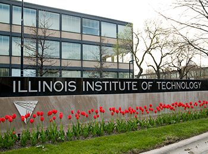

Mustafa Hasan
Chicago, IL
(773) ***-****
hasanmustafa1605@gmail.com
LinkedIn
GitHub
Summary
Cybersecurity and ITM student focused on building secure and efficient
systems through hands-on programming and technical problem-solving.
Experienced in Java, Python, and C++, with projects ranging from a
Java-based streaming system to robotics optimization and data analysis.
Seeking opportunities to apply and strengthen these skills in real-world
environments while contributing to secure, reliable technology solutions.
Education

Illinois Institute of Technology
Bachelor of Science in Applied Cybersecurity & Information Technology
Minor in Artificial Intelligence
Expected June 2028
Skills
- Programming: Java, Python, C++, SQL, HTML
- Tools: Microsoft Office, Google Suite, Salesforce, Store Ops by Amazon
- Other: Robotics, Data Analysis, Project Management
Project Experience
Shape Analysis Tool – Python (Dec 2025)
Illinois Institute of Technology
-
Created a program to generate random shapes, calculate areas and surface
areas, and display results via terminal, file, or GUI.
Java-Based Streaming System – Java (Apr 2025)
Illinois Institute of Technology
-
Developed a streaming platform with personalized playlists, file imports,
playback tracking, and user management.
Osoyoo Line-Following Robot – C++ (Oct 2024)
Illinois Institute of Technology
-
Built and optimized a line-following robot, achieving 100 percent success
and the fastest competition time of 30 seconds.
Work Experience
Retail Store Associate – Amazon Fresh
Norridge, Illinois
October 2025 – February 2026
-
Used handheld devices and printers to process, track, and fulfill online
customer orders.
-
Met productivity and accuracy standards in a high-volume environment.
-
Managed outbound order staging to support efficient fulfillment.
-
Assisted customers with order issues and system updates.
Data4All Science Workshop Participant
University of Chicago
September 2022 – November 2022
-
Used Python to analyze Cholera epidemic datasets as part of a data science
team.
-
Identified trends and presented findings through data-driven reports.
-
Developed analyses in Jupyter Notebook for clarity and reproducibility.
Volunteer Experience
Vice President of Education – Illinois Tech Robotics
Illinois Institute of Technology
November 2024 – December 2025
-
Strengthened organizational knowledge through documentation and workshops.
-
Led robotics and programming workshops for members.
-
Mentored new members to build technical and leadership skills.
Operations Assistant – ICNA Relief
Chicago, Illinois
November 2024 – January 2025
-
Organized food drives serving over 200 families weekly.
-
Processed client registrations using Salesforce.
-
Coordinated logistics to improve volunteer efficiency.